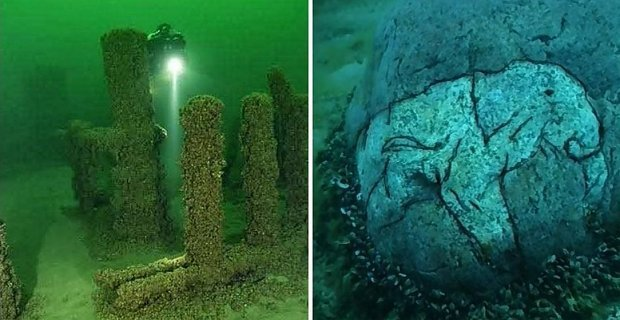
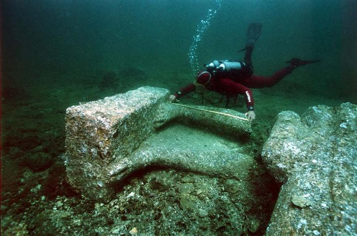
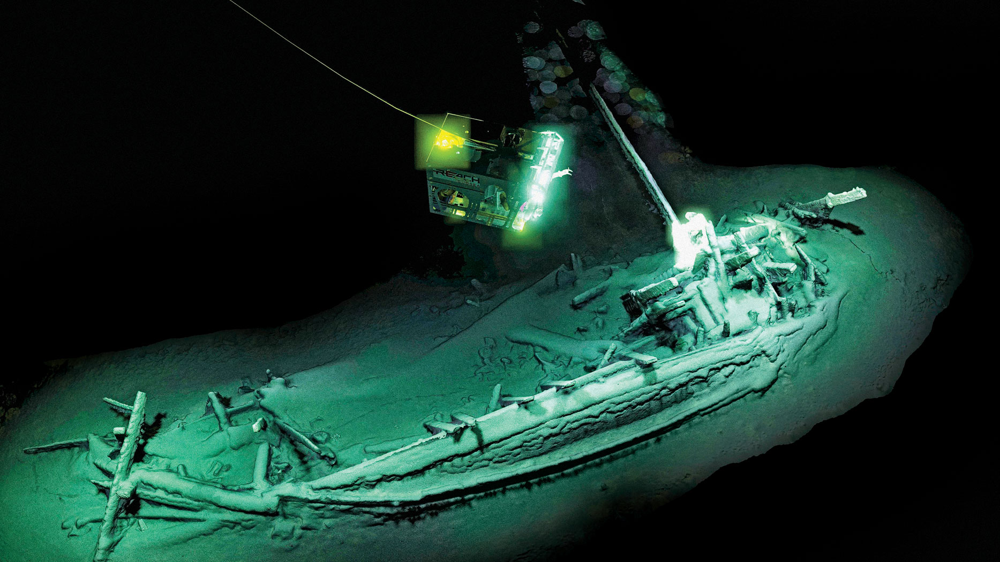
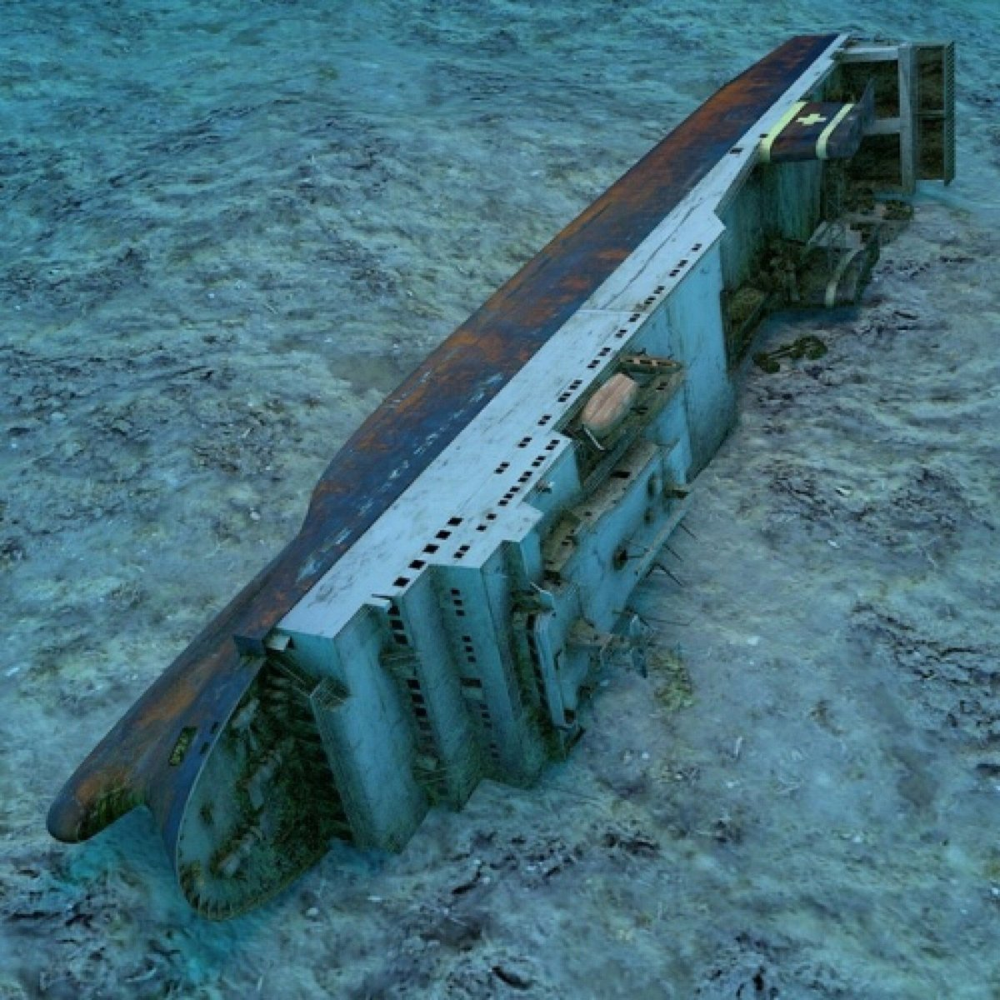
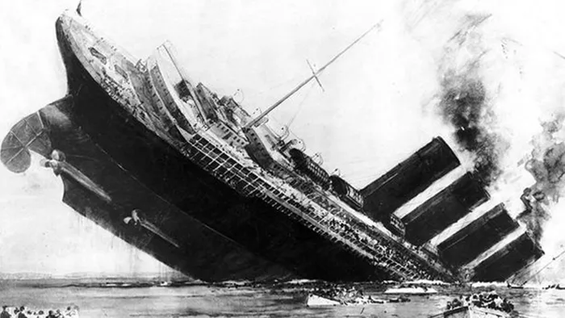

1. Stonehenge jeziora Michigan
Rok odkrycia: 2007
W 2007 roku profesor archeologii podwodnej w Northwestern Michigan College, odkrył szereg kamieni ułożonych w okrąg 40 stóp pod powierzchnią jeziora Michigan. Jeden kamień na zewnątrz okręgu posiada rzeźbę, która przypomina mastadom – zwierzę podobne do słoni, które wyginęły około 10.000 lat temu
Przejdź do ostatniego2. Zaginione Miasto Heracleion
Rok odkrycia: 2000
Gdy w poszukiwaniu zaginionego egipskiego miasta archeolodzy byli gotowi zrezygnować, wtedy natknęli się przez przypadek na ruiny. Przez wieki wierzono w legendę, że miasto niezwykłego bogactwa wymienione przez Herodota, odwiedzane było przez Helenę Trojańską i Parysa. Miasto zatopiono w morzu. Nurkowie zaczęli odkrywać skarby zatopionego miasta, a współcześni archeolodzy mogli zobaczyć i pokazać jak wyglądało życie za tamtych czasów.
Więcej o Legendzie3. Starożytny wrak na Morzu śródziemnym
Rok odkrycia: 2014
Głębokość: 160m
Przez tysiące lat ludzie wierzyli w legendę o starożytnym statku handlowym, który zatonął z kamieniami i mnóstwem ceramiki w basenie Morza Śródziemnego. Wreszcie, w 2014 roku, nurkowie u wybrzeży Malty znaleźli starożytny, fenicki wrak z wieloma starymi garnkami z zachowanym złotym skarbem. Pochodzący z prawdopodobnie 700 roku p.n.e. statek został uznany przez historyków za ogromne i znaczące znalezisko.
4. MS Zenobia
Rok odkrycia: 1980
Głębokość: 43m
10.000 tonowy prom zatonął na dnie oceanu w Zatoce Larnaka na Cyprze w 1980 roku i spoczywa tam do dziś . Szwedzki prom zbudowany w 1979 roku, wywrócił się i zatonął w czerwcu 1980 roku, podczas swojego dziewiczego rejsu. Został uznany za jeden z dziesięciu najlepszych wraków nurkowych na świecie w 2003 roku.
5. Titanic
Rok odkrycia: 1985
Głębokość: 3800m
Prawdopodobnie najbardziej znany ze wszystkich zatopionych statków na świecie. Każdy zna historię o tym, jak ten wspaniały statek zderzył się z górą lodową w kwietniu 1912 roku, podczas swojego dziewiczego rejsu. Od 1985 roku, kiedy go w końcu odkryto, Titanic stał się źródłem inspiracji dla wielu książek i filmów.
Kliknij mnie